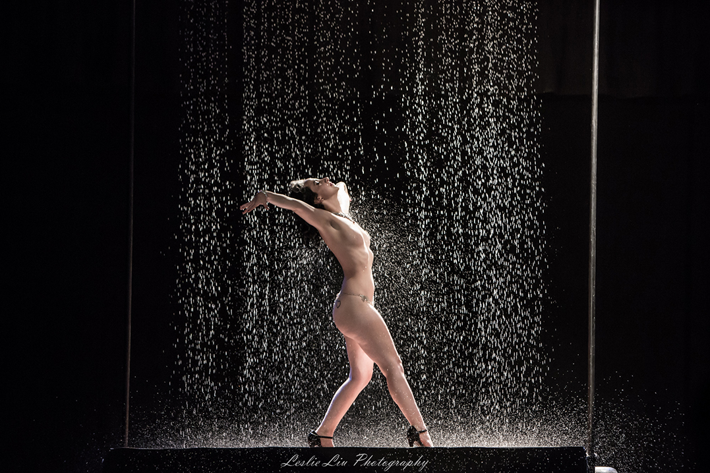

Bowerbirds - The Boweress
All things glamour!
19 July, 2018
You’re an amazing performer, dancer and presenter…. How did you first get into Burlesque?
I have always been a live music/entertainment addict so I was always watching people on stage by also yearning to be there myself.
I use to go to a venue in Newtown called ‘The Vanguard’ every weekend and some weeknights when I could. It was a beautiful venue filled with the most incredible and interested people I’d ever seen. I remember looking through the crowd and seeing an incredible woman who looked like she was straight out of a 1950s hollywood movie, I needed to know her and I wanted to be her!
Turns out she was a Burlesque performer so I started watching shows and fell in love with the women and the culture and I knew that this was for me. I spoke to a girl I knew who was in the scene and two months later I did my first show at a newbie night in Surry Hills called ‘The Peel’.
How did you come up with your stage name?
I wanted to keep part of my real name so I took my middle name ‘Mae’ and thought that Memphis at the time suited me.
When I began performing I had bright red hair and loved American Pinup Culture, I went with Memphis as I thought it would represent my style of performance at the time.
My performances are very different to when I first started but the name has stayed so for now I am the Aussie dame with a Yankee name.
Name an inspiring female and how she influences you?
It is difficult to pick just one woman and I honestly don’t think I can so I think I am going to have to answer this question in a different way and say that ALL of the females I am surrounded by every day inspire me and influence me.
Perhaps I was expected to say Marilyn Monroe or Dita Von Teese but that just wouldn’t be true.
I am inspired by the women I perform and create with, the women running their own business or reaching their goals. These are the women that make me want to get on stage and be powerful, create and generate fun, love and positivity.
Is there a difference between striptease and burlesque?
There is a difference but I still proudly call myself a stripper. There are many differences between burlesque strip tease and stripping in a club.
The most obvious ones are burlesque performers generally have more extravagant costumes, pasties and a gstring or merkin are always worn. Burlesque is generally based on parody and will have an element of comedy in the brief 5 minute performances.
Not all burlesque performances are overtly sexual, some are more on the performance art side of burlesque or story telling.
Burlesque is very much about the costume as it is the performance…what is your style like outside of performing?
My style outside of performing is always changing, it changes with my mood but it will generally be mostly black clothes with multiple accessories including the largest earrings I can find, a leopard print or pink paisley bandana, gold bracelets, and always high heels and false eyelashes.
I don’t know how to dress casual and I can’t dress down, I dress how I feel and that most of the time is eccentric and confident.
People are sometimes confused when they see me transform from bright pinks and blues all glamour on stage to black clothed confused punk off stage.
Describe your notion of a bowery and where/ what it is?
My Bowery is definitely on stage.
Describe one of the best spaces you have performed in?
There have been many amazing places and venues I have performed at,circus tents, warehouses in the inner west and spiegeltents around Australia but I must admit that performing on stage in Las Vegas for the Burlesque Hall of Fame in front of my fellow performers from all around the world was something really special.
How important it to #findyourboweryin order to perform at the high level you do? And how do you accommodate downtime into your no doubt busy schedule?
My Bowery is the stage so it is super important for me to find it where ever I can, I don’t mind the size of the stage or where it is as long as the audience is having a great time then so am I.
I find downtime really difficult, I am always on the go so when I find myself at the rare times when I have nothing to do I generally find something to do. It could be making a head dress or fixing up an old costume, all this while watching cheesy TV in the background.
How does burlesque empower you and what do you want women to take away from your performances?
The world of burlesque is a wonderful thing and there are many ways I am empowered by this culture. I am empowered by burlesque when I put on a show and have an audience of people having a great time and empowered by the women who after the show thank me for being silly with my body and letting them know that they can be themselves no matter who they are.
I always want women to walk away from my shows realising that bodies are funny, weird and wonderful. Bodies are such beautiful silly things that all move in silly ways and we shouldn’t be afraid of that. We don’t always have to be sexy and sexual with our bodies, its okay to jiggle your bum till it looks weird or to squish your boobs cause they are squishy or even to pick out a wedgie.. and yes these are all things I will very openly do on stage!
Who are the main audience members of burlesque shows?
Many people think audiences will be mostly male but how wrong they are, we have more women in our audiences than men most of the time. I speak to a lot of women after our shows who have brought their partners along to enjoy the shows with them.
Quality burlesque is for everyone and I truly believe that!
5 essential items to your bowery
It would be pretty weird not having an audience now knowing my bowery is on stage.
Confidence.
My wig.
Creative Friends.
Pasties! (Nipple Covers)
List your top 3 performances
My Favourite has to be a classic act which involved a rain machine that my dad built for me that stand 3m high and the same across. At a point in the performance then machine is turned on and a wall of water cascades over me.
Then would be my Nailed it routine where I have recorded my voice to tell the story of my internal monologue during the act. The voice over says things like “I forgot to put my gloves on” & “I wonder when my last pap smear was?”.
And finally would be my Army of Mae act where I have two beautiful male backup dancers and we kick ass with amazing choreography, acrobats and style, there is also one point where I walk on a treadmill and fire extinguishers are let off!
Finish these sentences…
This year is…going to be bigger and better!
Burlesque to me is…my world.
All women need is… a kind heart.
As a woman, I want… to be the best person I can be.
